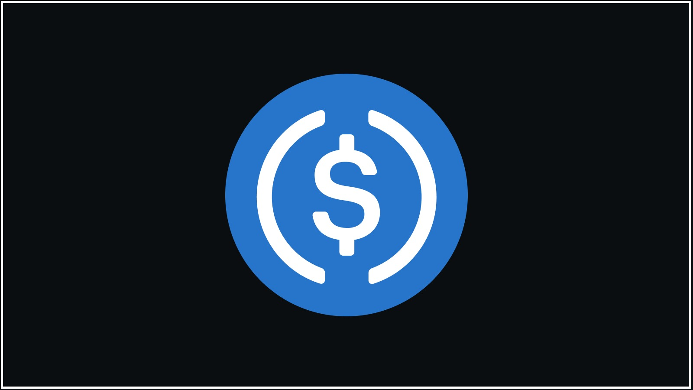

Payment Services
From wallets to webhooks, we help businesses adopt stablecoins with a setup that’s practical, secure, and built for long-term use. Here are 4 major ways we do so:
1. Gateway Integration
We'll connect your site or platform to stablecoin-compatible payment gateways. Whether you're using Stripe's crypto support, Coinbase Commerce, or on-chain solutions like smart contract-based checkout, we’ll make sure payments are fast, secure, and verified on-chain.
2. Wallet Setup & Management
From custodial wallets (for ease of use) to non-custodial options (for maximum control), we’ll guide your team through wallet selection, setup, and safe handling of private keys—so your customers can pay and your team can sleep at night.
3. Stablecoin Strategy
Need help deciding between USDC, USDT, or something like EUROC? We’ll help you match your business model to the right token, with a view on transaction volume, jurisdiction, and compliance.
4. Connected Dashboards & Data Sync
We build real-time dashboards that let you track stablecoin payments, wallet activity, and compliance status across borders—all in one place. Whether you’re syncing on-chain transactions with CRMs, ERPs, or marketing tools, we’ll help you bridge your web3 infrastructure with the rest of your business stack. No more spreadsheets or disconnected systems—just clean, usable data where and when you need it.
Example Scenarios
🛒 Cross-Border Payouts Without Banks
A small but growing business wants to pay contractors in multiple countries without waiting days for wire transfers or dealing with international banking fees. They’re interested in using USDC for faster, cheaper payouts but aren’t sure how to manage wallets, track transactions, or stay compliant. We help them design a stablecoin payment flow that automates fund transfers, integrates with their accounting tools, and gives them visibility into every payment—no crypto background required.
📊 Internal Wallet Activity Dashboard
A finance team accepts stablecoin payments from customers but struggles to track what’s been received, from whom, and for what. Instead of relying on block explorers or copy-pasting wallet logs into spreadsheets, they need a cleaner way to view and organize transactions. We build a custom dashboard that connects to their wallets, displays incoming payments in real time, and highlights any missing metadata—making reconciliation simple and shareable.
🔗 Smart Contract Triggers for Operations
An operations team wants to know the moment a customer completes an on-chain payment—so they can unlock content, send onboarding emails, or notify the right people. They don’t want to manage infrastructure or write webhook handlers from scratch. We help them bridge smart contract events to tools like Slack, Google Sheets, or HubSpot, giving them an automated, low-maintenance way to tie payments to business workflows.